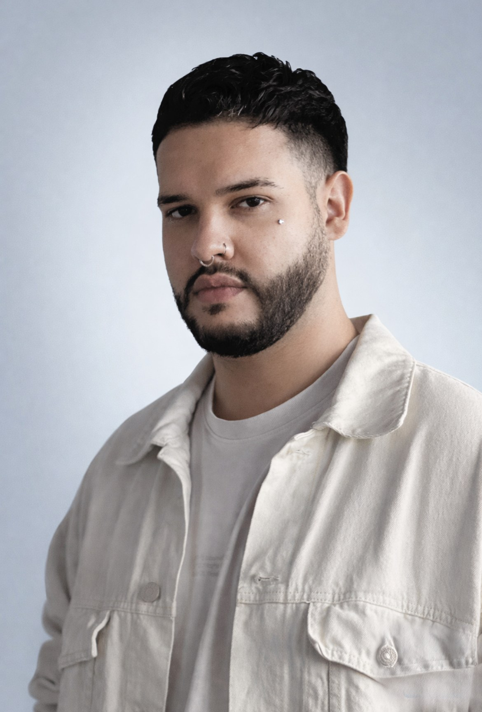

about
effortless by design
I'm Chris Rodriguez — a senior UX designer who makes complex products feel effortless for the people who use them. I believe good design is a system decision as much as a visual one: get the structure right, and the screen takes care of itself.
With 6+ years spanning enterprise finance and independent studio work, I bring the same approach everywhere — research when there's budget for it, sharp stakeholder triangulation when there isn't, and reusable patterns over one-off screens. Most recently at TD Bank's Odyssey platform team (U.S.); before that, running my own studio, Wolabba (Costa Rica), and building web products at SAVAGE Media Group (Chicago, IL).
capabilities & methodologies
product design
ux design
ui design
user research
prototyping
usability heuristics
design thinking
agile
tools & technologies
figma
claude
claude code
confluence
hotjar
wordpress
chatgpt
html
ai generated media